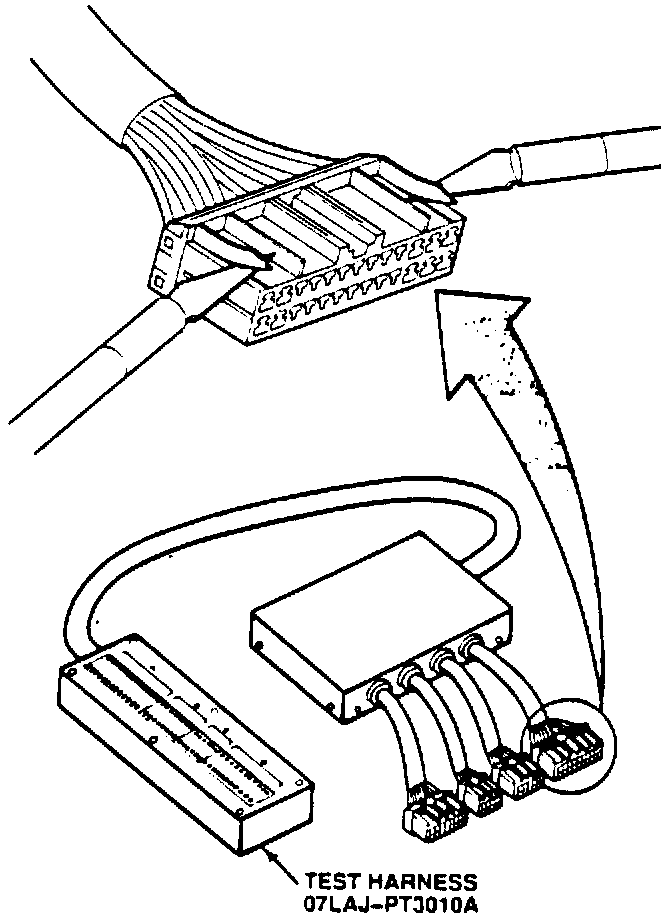
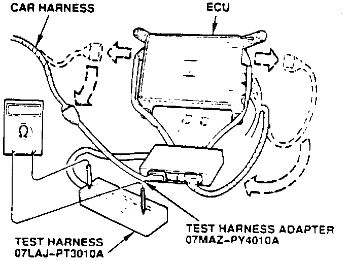

A/T - Modification Of Test Harness For Troubleshooting
February 19, 1991BULLETIN NO
91-013
YEAR
1991
MODEL
LEGEND
VIN APPLICATION
ALL
Modification of Test Harness 07LAJ-PT3010A for A/T Troubleshooting
The ECU on '91 Legends controls the automatic transmission as well as fuel injection. It has one 26-P socket on its left side for the connector that carries A/T control wires. That socket and connector are different from the 26-P socket and connector on the right side of the ECU. (So you can't switch the two connectors by mistake.)
This means that the existing 26-P connector on Test Harness 07LAJ-PT301 OA won't fit the new socket in the ECU. It also means that the car's new connector needs an adapter to fit the existing socket in the Test Harness box. So. before you use the Test Harness for A/T troubleshooting, modify it as shown in step 1, then hook it up with the adapter as shown in step 2.

1. Remove these ribs from the 26-P connector with an X-acto knife.

2. Hook up the test harness and the test harness adapter to the ECU as shown to troubleshoot A/T problem codes (refer to page 14-47 in 91 Legend Sedan Service Manual).